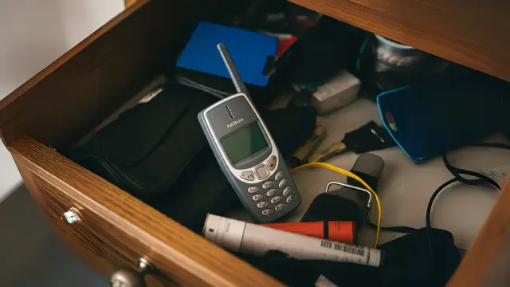

Tot i que el model de reciclatge que ofereixen les empreses és millorable, algunes associacions opinen que els consumidors també han de posar de la seva part per contribuir a una economia sostenible dels dispositius electrònics.
Enquestes a consumidors han observat que, després de finalitzar l’ús d’un mòbil:
El 20% el reven o l’intercanvia, 30% el regala a un familiar o amic, i la resta el guarda a casa ja sigui per tenir-ne un de recanvi o perquè no saben què fer amb ell.
En la nostra enquesta, hem vist que un 30,1% dels enquestats tenen més de 3 mòbils a casa. La majoria dels enquestats en tenen de reserva per si es trenca el principal, però una fracció els té perquè no saben com reciclar-lo o no tenen temps per fer-ho.
A nivell global, una enquesta ha vist que ¾ parts dels consumidor tenen algun mòbil a un calaix de casa, mentre que ⅕ dels consumidors en tenen tres. Els mòbils guardats a un calaix es solen anomenar ‘mòbils dorments’ i s’estima que hi pot haver fins a 10 mil milions de mòbils sense ús actual arreu del món.
Tots aquests mòbils dorments són fàcilment recuperables ja que més d’un terç dels propietaris asseguren que els tornarien si es complissin alguna o totes d’aquestes condicions:
- Que reembolsessin una part del preu del mòbil (tot i que fos poc).
- Que es garanteixi seguretat amb la gestió de les dades personals.
- Que sigui un procés ràpid i senzill pel consumidor.
Els mòbils dorments, representen una oportunitat de sostenibilitat, ja que aportaran una gran quantitat de materials quan es reciclin. Les empreses en podrien treure un benefici econòmic. No només es parla d’aquest benefici immediat en la reutilització, ja que la recuperació dels minerals té potencial de reduir el seu preu de mercat. L’economia circular reduiria la demanda dels minerals i la materia prima.
Més d'un terç dels consumidors retornaria els seus terminals si es garantís un procés senzill, seguretat total i irreversible en la gestió de les seves dades personals i un petit reemborsament econòmic, però les barreres actuals dels fabricants ho dificulten.